GRADE
일반강, 탄소강, 특수합금강, 스테인레스 스틸 정밀 압연 코일 생산으로 자동차, 전자, 정밀 기계 산업 발전을 함께합니다.
(주)도스코는 30여 년간 축적된 냉간압연 기술력을 바탕으로 대한민국 정밀 부품 산업의 근간을 함께해 왔습니다.
(주)도스코 홈페이지를 찾아주신 고객 여러분을 진심으로 환영합니다.
(주)도스코는 급변하는 글로벌 산업 환경 속에서도 오직 특수강 냉간압연 코일 분야의 전문화와 기술 혁신에 전념해 왔습니다. 고객이 요구하는 가혹한 물성과 까다로운 규격 조건을 정확하게 실현하기 위해 지속적인 설비 투자와 첨단 품질관리 시스템을 구축하였습니다.
자동차, 정밀 전자, 기계 산업의 핵심 소재로서 단 1미크론의 오차도 허용하지 않는 엄격한 정밀 두께 공차(±0.005mm)와 최적의 열처리 평탄도를 구현함으로써 고객사의 제조 공정 안정화와 원가 절감에 실질적인 기여를 해오고 있습니다.
앞으로도 고객과의 작은 약속 하나도 소중히 여기며, 소량 다품종 맞춤형 주문부터 신속한 양산 납기까지 신뢰와 상생의 가치로 보답하는 최고의 파트너가 될 것을 약속드립니다.
(주)도스코 DOSKO CO., LTD.
안산 반월국가산업단지
각 강종 카드를 클릭하시면 세부 스펙 및 기술 사양 모달창이 확장되어 나타납니다.
두께공차, 폭공차, 화학성분 분석표 및 경도 환산표 등 상세 기술자료를 지원합니다.
도스코만의 정밀 냉간압연 공정도, 생산현장, 포장출하 및 공인 설비현황을 원본 그대로 투명하게 안내합니다.
원소재 입고부터 정밀 압연, 열처리, 연마 및 검사·출하까지의 표준화된 공정 순서입니다.
Cold Rolling Mill
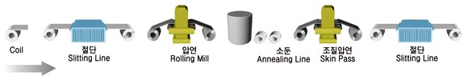
Heat Treatment (Lead / Oil / Water)
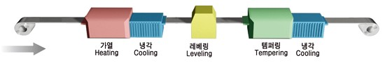
Grinding & Surface Polishing
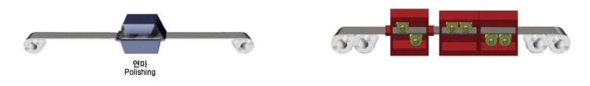
Final Inspection & Packaging
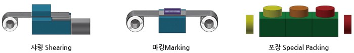
ISO 9001/14001 국제 표준 인증 및 독자적인 특수강 압연·열처리 기술 특허로 글로벌 경쟁력을 입증합니다.
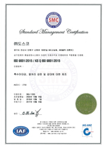
특수강 냉간압연 코일 설계 및 제조
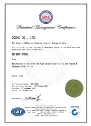
친환경 제조 공정 및 표준화 관리
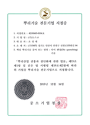
중소벤처기업부 인증 기술 경쟁력
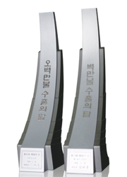
한국산업기술진흥협회(KOITA)
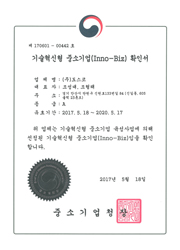
대한민국 특허청 등록 특허기술
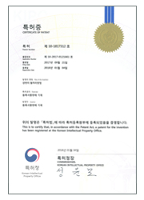
초정밀 폭공차 제어 특허 등록
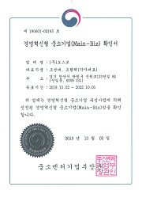
산업통상자원부 기술 공인
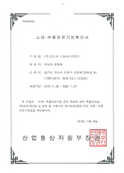
모범 기업 경영 및 품질 성과
엄격한 통계적 공정관리(SPC)와 ISO 9001 품질 표준을 준수하여 불량률 제로화를 실현합니다.
신속한 원자재 수급망과 탄력적인 생산 설비 운영으로 고객사의 촉박한 일정에도 완벽 대응합니다.
단순 납품을 넘어 고객 제품의 원가 절감과 생산성 향상을 함께 연구하는 기술 파트너가 됩니다.
도스코의 숙련된 엔지니어와 영업 전문가가 고객님의 사양에 맞는 최적의 제품을 친절하게 상담해 드립니다.
문의 내용을 남겨주시면 담당자가 빠른 시일 내에 연락드립니다.